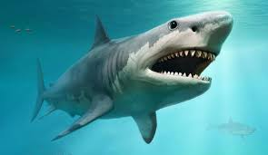
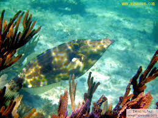
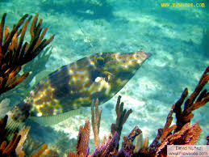

¿Qué son los seláceos?
Los seláceos son un grupo de peces cartilaginosos que incluyen a las rayas, los tiburones y las lijas. Estos animales han sido una parte importante de los océanos durante millones de años, y su estudio puede proporcionar valiosas lecciones sobre la evolución y la adaptación.
Características
- Esqueleto cartilaginoso: A diferencia de los peces óseos, los seláceos tienen un esqueleto hecho de cartílago, que es más ligero y flexible.
- Aletas: Los seláceos tienen aletas pectorales y aletas caudales que les permiten nadar y maniobrar en el agua.
- Dientes: Los seláceos tienen dientes afilados y reemplazables que les permiten capturar y comer presas.
- Piel: La piel de los seláceos está cubierta de dientes dérmicos, que les proporcionan protección y reducen la fricción en el agua.
Clasificación
Los seláceos se clasifican en varios órdenes y familias, incluyendo:
- Tiburones (Selachimorpha): Incluye a los tiburones de aguas cálidas y frías, como el tiburón blanco y el tiburón tigre.
- Rayas (Batoidea): Incluye a las rayas de aguas cálidas y frías, como la raya manta y la raya águila.
- Lijas (Pristiformes): Incluye a las lijas de aguas cálidas y frías, como la lija de mar y la lija de río.
Imágenes
 

Enlaces relacionados
Para aprender más sobre los seláceos, visita nuestras páginas: